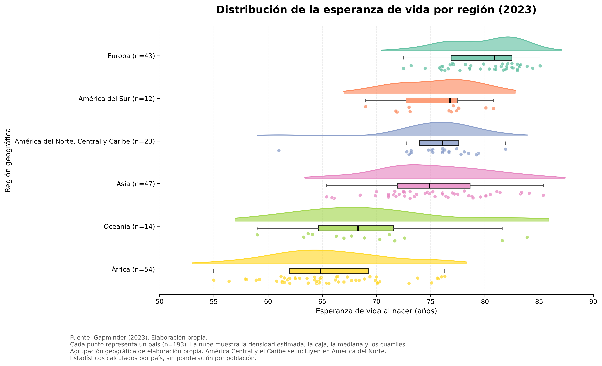
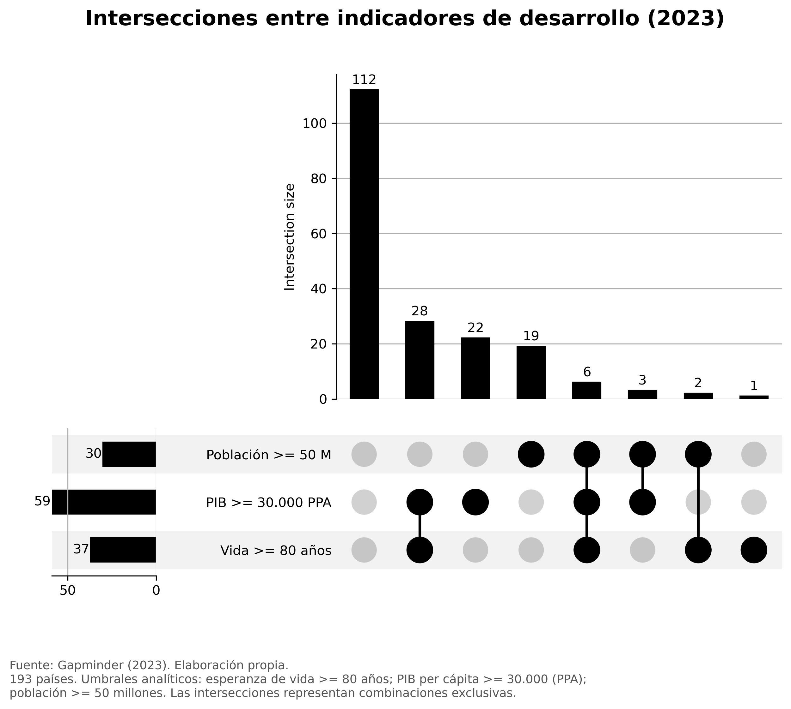

Tres técnicas de visualización
Este proyecto presenta tres técnicas de visualización aplicadas a datos abiertos de Gapminder correspondientes al año 2023. El análisis utiliza 193 países y explora relaciones, distribuciones e intersecciones entre indicadores demográficos y económicos.
TÉCNICA I · BUBBLE CHART
Desarrollo económico y esperanza de vida
Cada burbuja representa un país. Su posición muestra el PIB per cápita y la esperanza de vida, mientras que su tamaño representa la población. El eje económico utiliza una escala logarítmica.
Abrir visualización interactiva en Flourish
Hallazgo: se observa una asociación positiva entre PIB per cápita y esperanza de vida, sin que ello implique causalidad.
TÉCNICA II · RAINCLOUD PLOT
Esperanza de vida por región geográfica
Se combinan curvas de densidad, diagramas de caja y puntos individuales para comparar las distribuciones de esperanza de vida entre seis regiones.

Hallazgo: Europa presenta la mediana más alta (80,90 años), mientras que África presenta la más baja (64,85 años). Oceanía muestra la mayor dispersión entre países.
TÉCNICA III · UPSET PLOT
Intersecciones entre indicadores de desarrollo
Se analizan tres conjuntos: países con esperanza de vida de al menos 80 años, PIB per cápita de al menos 30.000 (PPA) y población de al menos 50 millones. Los umbrales son criterios analíticos definidos para este ejercicio.

Hallazgo: solamente 6 países cumplen simultáneamente los tres criterios, mientras que 112 no cumplen ninguno.
Fuente y metodología
Fuente de datos: Gapminder, año 2023. Visualizaciones elaboradas con Flourish y Python (pandas, matplotlib, seaborn, scipy y upsetplot).
El análisis se realiza por país, sin ponderación por población. Las agrupaciones regionales y los umbrales del UpSet Plot se han establecido para esta actividad académica.